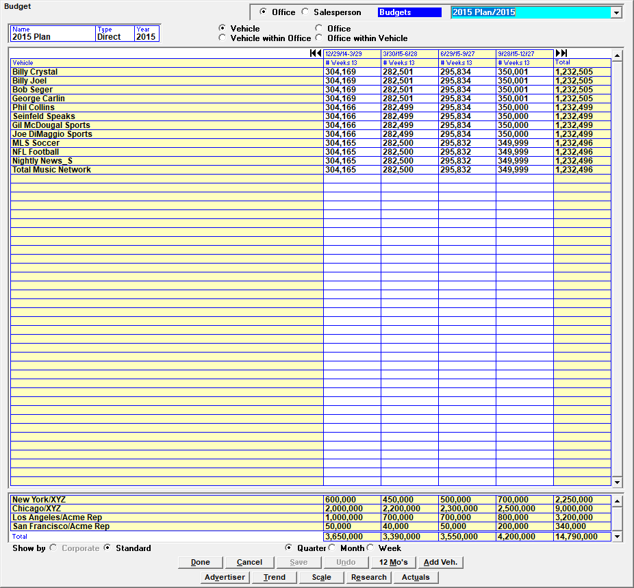
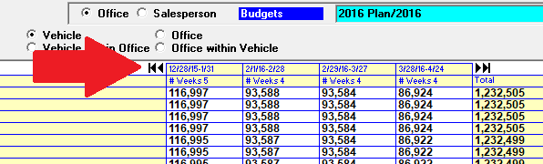

Budget Screen
An example of the main Budgets screen is shown below.

The following selections are available on the Budgets screen:
- Office/Salesperson: Budgets can entered and viewed by Office or by Salesperson by selecting the corresponding radio button at the top of the screen. The default is by Office and this document will focus on budgets by office as budgets by salesperson can only be entered but are not output on any report.
- Budgets/Actuals toggle: The blue toggle at the top of the screen changes the view between budgets and actuals.
- Budgets/Actuals dropdown: Both budgets and actuals will appear in the dropdown in the upper right corner. This dropdown is used for selecting existing budgets or actuals, or for selecting “New” to create a new one.
- Name/Type/Year: This is the name of the budget, whether it is a direct or split type budget, and the applicable year, for the selected budget. (When the budget is defined by Salesperson, only the Year is available.) The default type is “direct”. Split types are used with the Tie-Out report for orders that are split between different sales offices.
- Vehicle/Office radio buttons: There are four radio buttons that determine the way in which you view or enter budgets when budgets are defined by office. (These radio buttons are not present when the budget is defined by salesperson.)
- Vehicle: shows a list of vehicles with their budget figures in the upper portion of the screen, and totals for each sales office in the lower portion.
- Office: shows a list of offices with vehicle totals at the bottom.
- Vehicle within office: shows each office, with every vehicle listed under each office, with the totals broken out accordingly. Vehicle totals will appear at the bottom of the screen in this view.
- Office within vehicle: shows a list of offices under each vehicle, with the office totals in the lower portion of the screen.
- Show by Corporate or Standard: Budgets can be entered by a Corporate or Standard calendar (if corporate calendars are used).
- Quarter/Month/Week: These radio buttons at the bottom of the screen determine the way data is viewed, by Quarter, Month, or Week.
The black arrows are used to cycle through the available dates when viewing the data by Month or by Quarter.

Budget Screen Buttons
At the bottom of the Budgets screen, the following buttons are available:
Done: press Done to exit the screen. If there are unsaved changes, a prompt will appear that asks whether to save the changes and exit, discard the changes and exit, or cancel the exit process.
Cancel: exits from the screen without saving any unsaved changes.
Save: saves any unsaved changes.
Undo: removes any unsaved change.
Twelve Months, Add Vehicle, Advertiser, Trend, Scale, Research, Actuals: the remaining budget buttons are used to access sub-screens that are used to create or modify budgets. Each sub-screen is described in the following section.